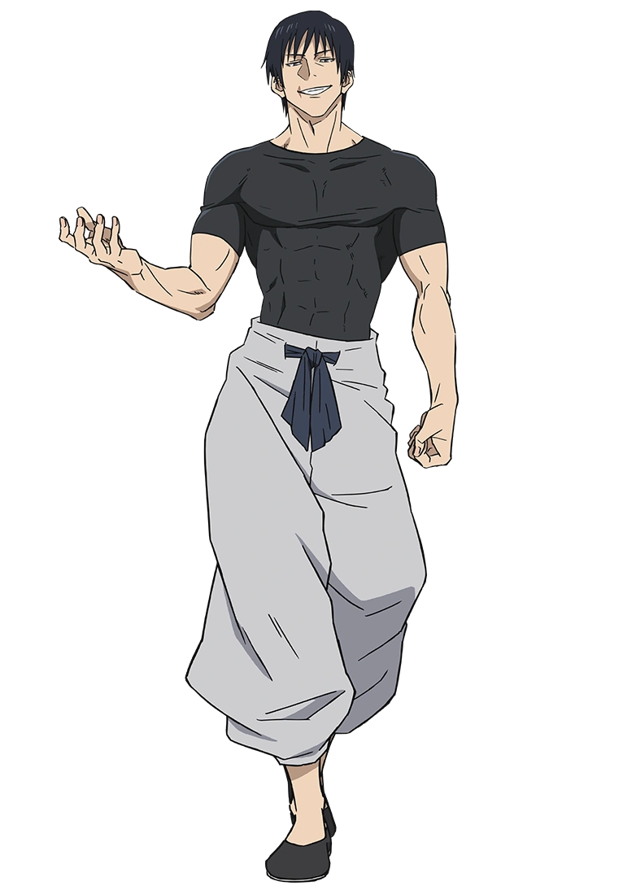
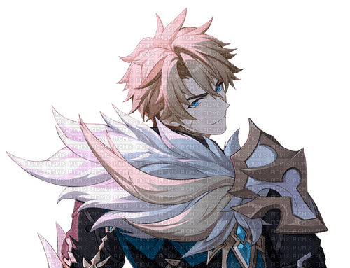
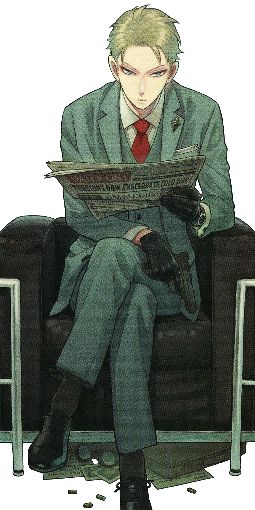

Original
Toji Fushiguro
Aparência original do dragão, embora envelhecido por uma bruxa anos atrás. Apesar da aparência madura, Jace possui menos de trinta anos de idade.
 Jace Drasnia Hendridkson
Jace Drasnia Hendridkson

Original
Toji Fushiguro
Aparência original do dragão, embora envelhecido por uma bruxa anos atrás. Apesar da aparência madura, Jace possui menos de trinta anos de idade.

Manifestação
Varka
Aparência obtida ao receber o poder da sua valquiria Ruyji Jingu Bang. Todos os status do dragão se elevam a 100% seu potencial, seus cabelos dourados refletam o estado da graça do sol em seu potencial total dentro do seu corpo.
Saiba mais
Segunda forma
Loid Forger
Ainda com o poder da Valquiria, mas adentrando um conceito de que menos massa muscular, permite uma maior velocidade e agilidade, o corpo do dragão consegue causar essas interferências, sendo mais interessante para técnicas discretas e mortais.
Saiba mais